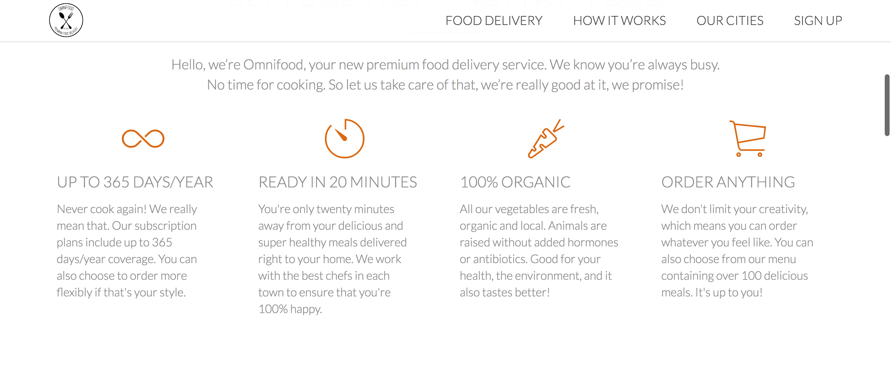

Date
March - April 2020
Category
UX/UI Design
Software Used
Brackets, CSS, HTML
Honestly, when I first set out to be a UX/UI designer I had no idea how to build my own portfolio using code. I was just using photoshop and indesign to put all of my best work together, but I realised that as my projects grew more intense and more detailed, it was really hard to store everything on a piece of paper and send them out. Sometimes I would have to leave out some of my work because the file was too big. I realised that no employer wants to sit around waiting to download my portfolio so I decided to host it online. I used Wix for a bit and it served me well, but because I was using the free version I had all of these watermarks and wix company logos. I think I first discovered github.io because my friend was using it. (She's an amazing UX designer!) So I decided to start learning HTML5 and CSS3 which are front end developmental languages for websites. I really liked learning about them because I found that I could customise so many things.
I learnt how to build a website from scratch following Udemy's course : Build Responsive Real World Websites with HTML5 and CSS3! Topics in this course included Web Design Basics, Responsive Web Design with Media Queries, JQuery, Performance Optimisation, Basic Search Engine Optimisation and Google Analytics.
TLDR, find the website here.
So, here is a step by step process of what I learnt during my course and what you can implement into your portfolio website!
I build a website called Omnifood which is an online premium food delivery service. I was provided with the logos and text for the website.
So first I learnt about the structure of a HTML document and what should go into it.
After that I learnt about CSS and what it does. So CSS is what you use to style the webpage, but the HTML is what goes into the webpage.
I got an introduction into web design basics including fonts, colour theory, spacing and layout and user experience. Here is an example of font "rules" you should adhere to in order to create a beautiful website!
I started building the header which is the most important part of the website because it is the first thing visitors see. I did a black overlay on the hero image and highlighted the buttons in orange to draw attention to them.

I then went on to build the feature section which are the main selling points of the website. I also used icons that represented the topics of the paragraphs and used grey text so its not as harsh to the eyes.
I also added images of meals that the company offers and greyed them out. However, if you hover over them, they become saturated and enlarges.

You should always tell your visitors or customers how to purchase your service or product, so I've included steps and links to the playstore and apple store to purchase the app.
I showed customers which cities Omnifood is currently in and provided contact details to the relevant social media page.
I also built the customer testimonials and over-lay them on top of an existing image.

I constructed a meal plan and highlighted the signup button for the meal plan that is the most profitable for the company.
I made a contact form which allows the customers to contact the company.

And lastly the footer which should include all your social media links.
Special Features of the Website
One of the most important things you need to do to your website is make to it responsive. Making a website responsive means that your website should be able to fit into any frame size without cutting off any images, texts or information. For example, a website should look just as good on computer as it does on a phone. If your information rearranges itself according to the set dimensions of the size of a screen, it is responsive. Here I used CSS to set dimension limits and requirements for the website.
Another thing you can do is introduce "sticky" navigation. "Sticky" navigation in this instance is the toolbar that appears when you leave the header area. It helps for easy navigation to different parts of the website without scrolling back to the top.
I also added animations to my website using animate.css. Here is a video showing the iphone picture sliding into the frame and
cities fading in.
I have a lot of images in my website and this slows the speed of the website when it's loading. So I optimised my webpage speed by reducing the pixels of the images to a smaller size. If you right click on the webpage, there should be an option to inspect, hover over the image you want to optimise, and check the pixel size in the element box below. Make sure you set the pixels to double of the required size to make sure you don't lose any quality.
What happens after you've done all of this? Host your website of course! I especially like github, but you can use other paid ones as well.
BUT WAIT! Don't you want to know how your website is doing? Well, I do! So I linked my website to Google Analytics, so I can see who's checking in and what's working well for my website!
Disclaimer: This is not an actual screenshot of my google analytics.
Alright! You're at the end! Thanks for coming to my TED talk. Subscribe for updates. No for real, come back soon!
Here's something additional because you made it this far.
There's actually one more thing called Flexbox. It's an easy way to build elements of your website. For reference, look at the image below.
Thanks for coming along with me! Now you're ready to go build your website! If you have any questions, shoot me a message at kartinleung@gmail.com!